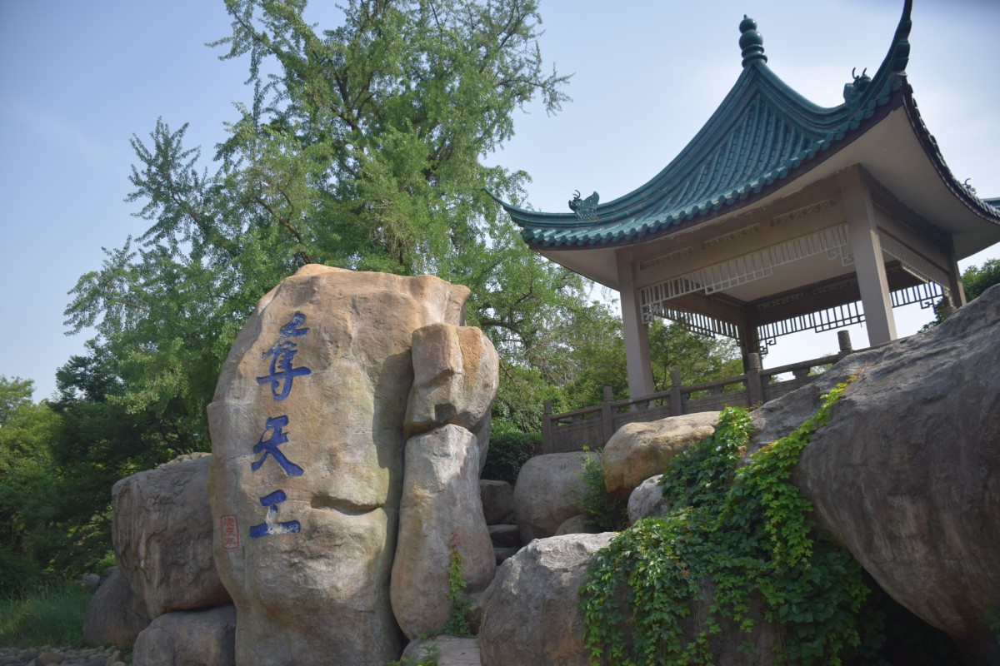

印象中无锡只有个天目湖，去过无锡之后发现这简直是无稽之谈。高中毕业那年被带去过天目湖，坐在亲戚的车上其实完全不知道到被带去哪了，还好没有被卖去挖煤。所以此次无锡之行一改我对无锡的印象，乃至动摇我留在南京的想法，看来需要再做考量了。
出发前夜，我在朋友圈放了个信号，然后有个师弟应答了，没想到高中时的师弟现在在无锡，着实高兴，次日就直奔无锡而去。
第一站是惠山古镇，号称无锡历史文化的露天博物馆，跟师弟约好了在惠山公交站前碰面，我先到了就四处逛了逛，然后从停车场进入惠山古镇，完全出乎师弟的意料，因为我好像走错门了，汗。

夏天来这品品茶，聊聊人生倒是有点意思
正好有人在，抓拍了一张

惠山寺始建于南北朝，香火旺盛
唐代陆羽品宜茗者，惠泉第二，“天下第二泉”因之得名
师弟说，阿柄曾经在这拉过二胡，不明真相的我于是网上找到了这样一段资料：《二泉映月》这首乐曲的标题，也使学者们常常为之争论。在江苏无锡市的西郊，有江南名山惠泉山。山上的一泓清泉，经唐朝“茶神”陆羽品尝，评为“天下第二泉”。阿炳失明前后常常去这里流连，他对故乡的山水充满着深情。然而，面对那月光虽明，世道却暗，泉水虽甜，人世却苦，水面虽平，人间不平的现实。他心中月儿凄冷，泉水怆凉。于是便借景抒情，融情于景，倾诉辛酸，遂取名为《二泉映月》。我当时差点想拿个树枝当二胡去摆摆样子，后来想想这样破坏花花草草的不大文明，还是要做个好公民。
逛完之后去办了个无锡市园林年卡，其实还有两日用的通票，便宜二十多，但对于我这个行程日期三日来说的简直坑，这样算起来比买门票划算，之后的景点基本都是拿卡直接过啦，还可以再来～
接下来去了荣氏家族的后花园，毛泽东曾这样评价荣氏家族，说：“荣家是中国民族资本家的首户，中国在世界上真正称得上是财团的，就只有他们一家。”现在的中信就是他们家的。
梅园大门，中信的标志分立两边
花丛里的蜜蜂
夺天工，并没有巧字
这里草皮经常换，听说前段时间还摆的都是花
第一天的行程大概就是这些，然后就找了个宾馆休息去了。说实话，园林看的也不少了，有些视觉疲劳了，毕竟都是人造景，还是更喜欢大自然的鬼斧神工。
晚上又出去拍了拍照，或许是因为处于郊区，夜晚的行人很少，大都是车辆来来往往。因为靠近太湖的缘故，身边总会有骑单车的人快速闪过，换做是我住在这里，也会经常出来骑行太湖吧，伴着一路的风，能吹去不少烦恼。
路灯，其实并没有这么绿啦
车灯轨迹，第一次拍出来

马路很宽，城市感觉很干净